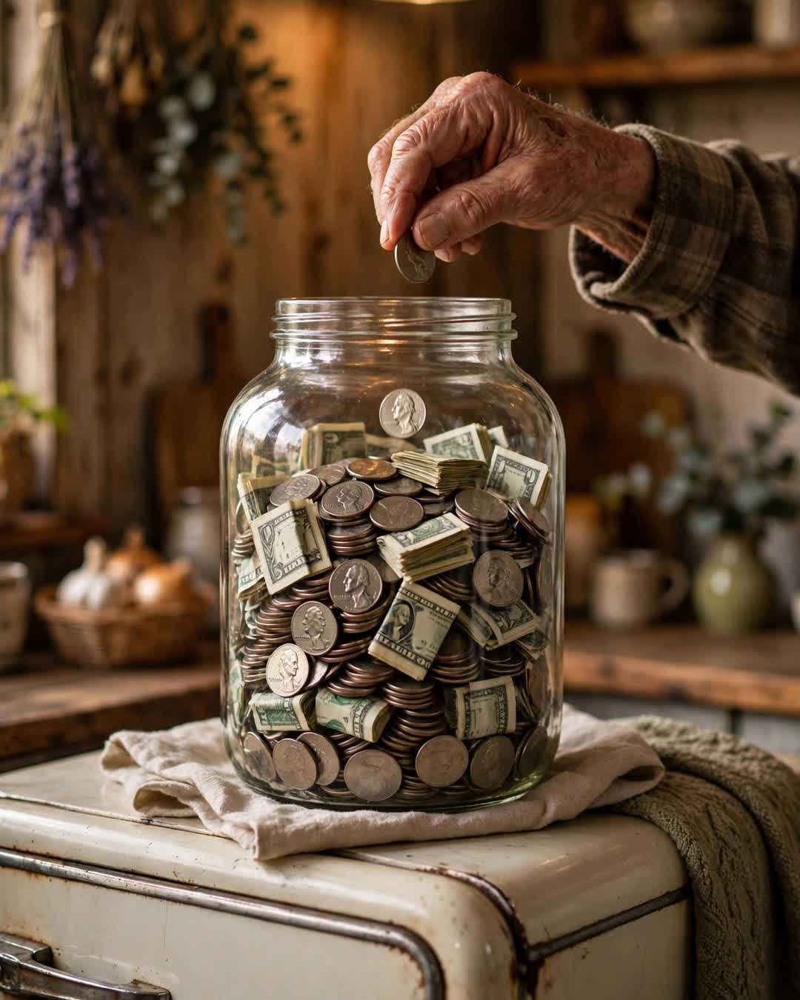

The Bingo Jar
A Clipp Kaili original story

For six years, my grandfather kept his bingo winnings in a pickle jar, and he wouldn't let anyone in the family touch a single quarter.
Grandpa Sam played bingo every Thursday at the community hall — dollar cards, church-basement coffee, and a crowd of seventy-year-olds who played like it was the stock market. He wasn't even that good. He'd come home with two dollars, or five, or once, memorably, eleven, and every cent went into that big glass jar on top of his fridge.
"What's it for, Grandpa?" I'd ask. I was nine, then ten, then eleven, and the jar was getting heavy.
"Something important," he'd say. "You'll know when it's important."
I had theories. A fishing boat. A new TV. Once, convinced it was a surprise trip to Disney World, I shook that jar like it might confess. Grandpa just laughed and put it back up high — higher, that year, than I could reach.
What I didn't know was that he was keeping a second count. Not in the jar. In a little notebook in his shirt pocket, where he'd started a list the winter my dad's hours got cut at the plant: "Danny — outgrowing the little bike. Pedals too small. Knees up to his ears. Boy pretends he doesn't care. He cares."
I cared more than I could say. All my friends had graduated to real bikes that spring — ten-speeds with hand brakes — and I was still riding a bike built for a seven-year-old, my knees practically steering. I never complained. In our house that year, you could feel the money worry sitting at the table like a fifth person. Kids learn fast what not to ask for.
The jar disappeared on a Saturday in May.
I came home from my friend's house and there, in our driveway, leaning on its kickstand in the sun, was a blue ten-speed with a silver bell — and a pickle jar, empty and washed, sitting on the seat with a piece of tape on it.
On the tape, in Grandpa's writing: "IMPORTANT."
He'd counted it out at the kitchen table that morning while I was gone. Six years of Thursday nights. One hundred and eighty-four dollars in quarters, ones, and fives — and, my mother told me years later, about sixty dollars more, added quietly from his own grocery money in the last month, because the jar had come up short and the bike could not.
He never said that part. Not once, in all the years after.
I rode that bike until I outgrew it, then my cousin rode it, then it hung in Grandpa's garage like a trophy nobody would take down. I got jobs, I got a car, I got grown. The jar went back on top of his fridge, empty, because Grandpa said a jar like that should stay where you can see it. Reminds you what quarters can become.
At his funeral, the bingo hall sent flowers. Eighty people signed the card. And on the back of it, one of the Thursday ladies had written a line I have never forgotten:
"Sam saved every win he ever got at our table. We all thought he was cheap. He was saving up to be a grandfather."
Quarters don't look like love.
Until you count six years of them.
This story is a work of fiction, written to touch hearts and bring families closer.
← Back to all stories